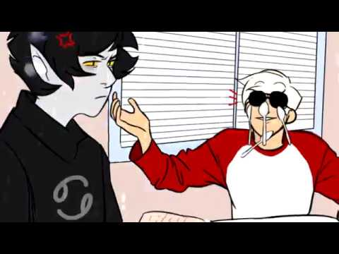
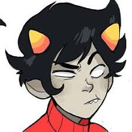

Interests
This is a compilation of all of my various interests, some of which are way more prominent than others

My first and main interest is DRAGONS!! I like pretty much all dragons, but my favorites come from the book seires Wings Of Fire (book covers shown above) which is specifically from the POV of dragons of all different types

This beautiful peice of art work right here is artwork of The Mighty Nein campaign 2 of the show called Critical Role! (no there are not 9 of them) This is my second interest which is Dungeons and dragons! You may think of me as a total nerd BUT, this is a wonderful game filled with oppertunities to kill stuff with magic or swords and get invested in the characters you create!
I love all of the Mighty Nein but my favorite character would have to be Jester, the blue demon lady up there who is a cleric that fights with a lolipop spiritual weapon, tiny magic unicorns and her duplicate her clerical patron is known as The Traveller, a chaotic deity of unknown origin. Shes just a beautiful ray of sunshine and chaos!
(characters left to right) Mollymauk Tealeaf, Beauregard, Fjord (pronounced ford), Frumpkin the cat, Caleb Widogast, Nott the brave, Jester Lavore, and Yasha
This, as you may have guessed, is the trash I abide by in my spare time. Homestuck. If you dont know what this is bless your soul.
Homestuck is the story of a young man named John Egbert who plays a world ending game with his friends Dave, Rose and Jade eventually coming to discover whats basically their creators the trolls and together they endure godship, deaths and romance? yes theres romance but the big thing is they're trying to stop a war while making a new universe from a frog, its complicated.
I have quite a few favorite characters from this so ill try and make it short by putting images and short descriptions of why i like them
Karkat (left) and Dave (right), they are canonical boyfriends and super adorable which is why I love them
This is kankri hes dead and talks way too much and is way too invested in blowing his whistle about trigger warnings, I love him cause hes adorable and has a nice sweater
Moving on from that train wreck